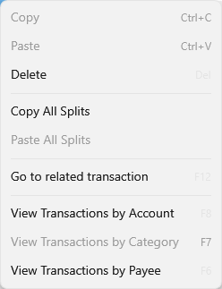

Clipboard#
Copy#
You can Copy the selected transaction, go to another account, click on the transaction view to make it the focus and
Paste that transaction into the other account. It will not copy Reconciled status. This does not create a
Transfer, this is purely a copy. It will not copy attachments.
Cut#
You can Cut the selected transaction, go to another account, click on the transaction view to make it the focus and
Past that transaction to move the transaction and all it's attachments to the new account. This is handy when you
created a transaction in the wrong account and want to fix it later. This is the same as using the
Move... command.
You cannot cut a reconciled transaction.
Splits#
You can also "Cut" or "Copy" a single split and paste it into another transaction to add that split to the other transaction.
Lastly, you can "Copy All Splits" if you select the following command after you right click on a split:
